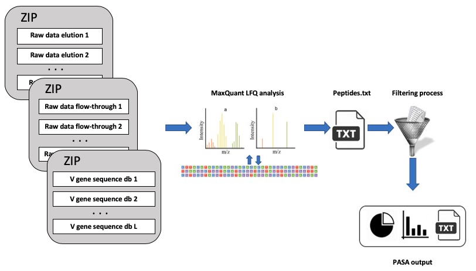

Introduction
Shotgun high-resolution proteomics antibodies is necessary for understanding the
dynamics and composition of polyclonal antibodies circulating in
serum (
Boutz, et al., 2014). At steady
state circulating antibodies are produced by terminally differentiated B cells but after
exposure to antigen the humoral response generates a diverse antibody repertoire
due to SHM and V(D)J recombination (
Wine, et al., 2013;
Lavinder, et al., 2014). For that reason, it is important to unveil
whether the Igs encoded by the peripheral blood B cells correspond to antibodies
present in circulation. Moreover, addressing questions as what are the relative
concentrations of serum antigen-specific monoclonal antibodies (within the
polyclonal pool), what are their repertoire features (e.g. V(D)J family usage, CDR3
length etc.) is important in order to shed light on mechanisms related to the
development of the immune response.
What is PASA?
PASA web server is user-friendly, free and open to all users and there is no login
requirement. PASA allows generating quantitative molecular measurements related
to serum antibody repertoire from high-resolution proteomic data. The PASA
web server is applicable for researchers at all levels that are interested in addressing
basic questions related to B cell development and differentiation, as well as an
application focused tool for vaccine development, immunodiagnostic discovery and
monoclonal antibody engineering.
Input
PASA accepts: (1) BCR-Seq data, as obtained from ASAP; (2) The raw mass spectrometry data files as
obtained from LC-MS/MS; (3) As part of the advanced options,
the user can specify the digestion
enzyme used to proteolytically cleave the antibodies (by default, Trypsin). Instead of (2), the
user can provide a file of derived peptides obtained using MaxQuant
(
Cox & Mann, 2008); (3) As part of the advanced options,
PASA accepts proteomics spectral files in raw format (at least two technical
replicates of each fraction elution/flow-through). For the integration with data derived
from NGS of antibody encoding B cells the user is requested to upload V gene
sequence database at the amino acid level. This database should be
generated from our recently published ASAP web server (
Avram, et al., 2018) that facilitates the analysis of
sequences derived from NGS (see
http://asap.tau.ac.il for more details).

Output and methodology
PASA is divided into two main phases. The first part utilizes the MaxQuant,
a proteomic search algorithm that is used by
PASA to identify the sequences of peptides derived from serum
antibodies (
Cox & Mann, 2008).
Specifically, PASA provides: (1) a list of peptides and their intensities for each fraction
(elution and flow-through), as identified by MaxQuant (el_peptides.txt and ft_peptides.txt, respectively);
(2) a list of peptides that were found enriched (by default, over five-fold) in their
relative intensity in the elution relative to the flow-through (filtered_peptides.txt). These
peptides correspond to antibodies that are antigen-specific; (3) The mapping of each
antigen-specific peptide to the BCR-Seq database. This mapping provides a correspondence between
a serum antibody and an antibody clone as found in the BCR-Seq data. Specifically,
each peptide in (2) is queried against all the BCR-Seq databases and classified as
non_informative (if no hit was found or hits from multiple clones were detected),
informative (if all hits were originated from the same CDR3 clone),
and cdr3-informative (if the peptide is both informative and overlapped with the CDR3 sequence).
The classification results can be found in the corresponding files (non_informative.txt,
informative.txt, and cdr3_informative.txt). Lastly, the following plots are generated for the
cdr3-informative peptides list:
- A pie chart of the clones isotype distribution;
- A bar plot of the CDR3 lengths distribution
- A bar plot of the V subtypes usage distribution
- A bar plot of the D subtypes usage distribution
- A bar plot of the J subtypes usage distribution
- A bar plot of the VD subtypes combinations usage distribution
- A bar plot of the DJ subtypes combinations usage distribution
- A bar plot of the VJ subtypes combinations usage distribution
- A bar plot of the VDJ subtypes combinations usage distribution
- A scatter plot (per BCD-Seq database) of the proteomic intensity with
respect to the BCR-seq database
For further examples, please see
Gallery Section or submit a
running example